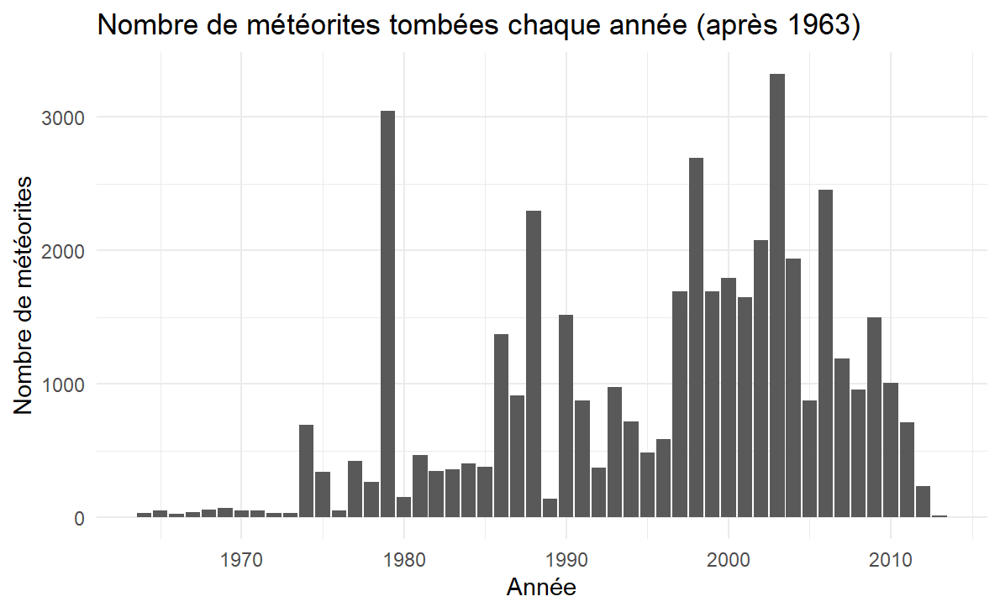
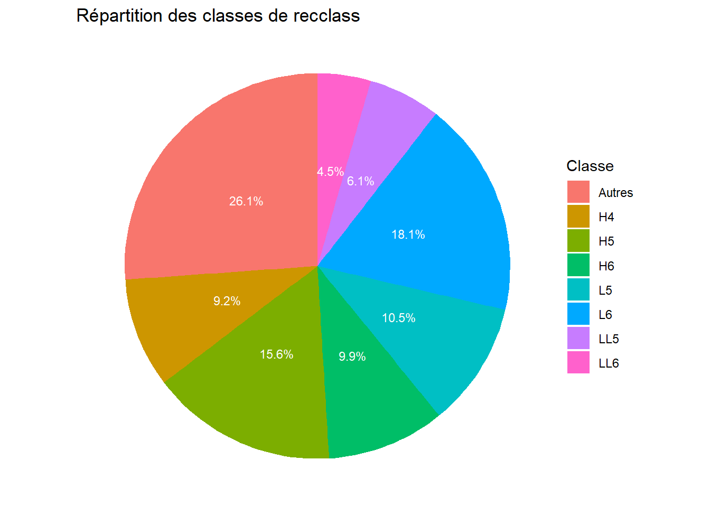
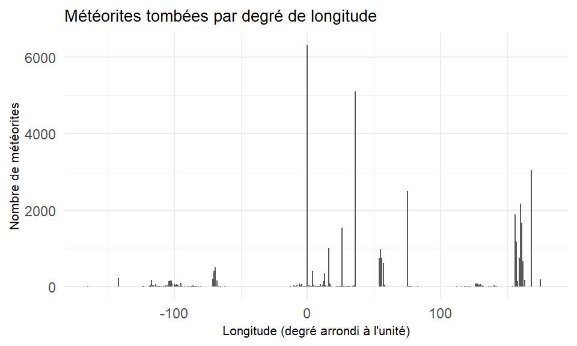
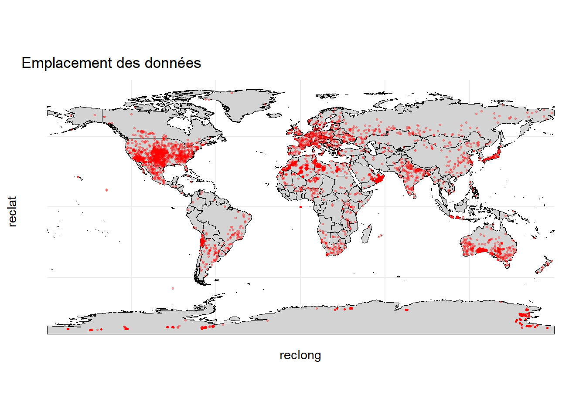

Types de processus de Poisson :
Processus de Poisson homogène
Caractéristique : Intensité constante λ(x,y) = λ₀ sur tout l’espace.Processus de Poisson inhomogène
Caractéristique : Intensité variable λ(x,y) dépendant de la position.
Meteorite Landings : jeu de données issu de l’Open Data de la NASA.

Pas d’objectif défini : exploration libre des données pour choisir nos axes d’étude du jeu de données. Mais quelques idées initialement données par Jean-François Coeurjolly :
Etude de la dimension temporelle des données.
Analyse des relations entre les variables du jeu de données.
Construire un modèle prédictif du nombre de météorites tombées dans un pays en fonction de sa superficie et de sa localisation géographique.
Réaliser une étude spatiale pour déterminer si certaines régions sont plus touchées.
Visualiser les chutes de météorites sur un planisphère.
Le jeu de données comporte 45716 observations pour 10 variables. Pour l’étude, nous nous sommes concentrés sur ces 5 variables :
\(\underline{\textbf{mass..g.}}\) : Elle corresponds à la masse de la météorite en gramme.
\(\underline{\textbf{year}}\) : Année où la météorite est tombée sur Terre.
\(\underline{\textbf{reclat}}\) : Lattitude de là où est tombée la météorite.
\(\underline{\textbf{reclong}}\) : Longitude de là où est tombée la météorite.
Autres variables : \(\textbf{id, nametype, recclass, fall, GeoLocation, geometry}\).
On a par la suite créé la variable \(\underline{\textbf{pays}}\) qui indique le pays dans lequel la météorite est tombée. Cela servira à filtrer les données par pays.
131 données manquantes soit 0,3% du jeu de données.
Très grande hétéorogénéité des valeurs :
Majorité de petites météorites.
Quelques météorites très volumineuses.
Biais de recensement en faveur des météorites les plus grosses.
291 données manquantes et une donnée aberrante. Très grande hétérogénéité des valeurs :

7315 données manquantes où la latitude, la longitude et la variable geolocation sont absentes en mêmes temps, environ 16% du jeu de données.
Visualisation sur le planisphère :

\(\rightarrow\) Biais géographique en faveur des régions les plus densément peuplées. Exectption de l’Antarctique expliquée par les expéditions réalisées pour la recherche sur les chûtes de météorites.


Pic en 0 : Données faussement renseignées en (0,0) en cas d’absence des coordonnées exactes (plusieurs milliers de données).
Peu de données manquantes mais sur des variables importantes (masse, année et localisation). Finalement, 38 115 observations (83% des données), a priori suffisant pour nos analyses.
Mise en évidence de biais :
Le jeu de données est en réalité très incomplet. Et nous manquons d’information pour éviter ces biais pour faire nos analyses.
\(\underline{\textbf{Pistes initialement envisagées mises de côté}}\) :
L’analyse temporelle : pas assez de précision temporelle et seulement 40 années exploitables. Nous avons étudié un autre jeu de données (Natural History Museum) plus précis mais également trop incomplet.
La modélisation prédictive du nombre de météorites tombées par pays : le biais géographique rend l’analyse peu pertinente.
\(\underline{\textbf{Pistes choisies pour le reste de l'étude}}\) :
Modélisation du processus de la chute des météorites : processus de Poisson homogènes et inhomogènes.
Visualisation en 3D pour se détacher des distortions causées par la projection sur un planisphère.
Définition
Un processus ponctuel est une mesure aléatoire discrète Φ sur un espace métrique 𝕊 , caractérisée par une distribution de probabilité gouvernant la configuration des points {x₁, x₂, …} ⊂ 𝕊.
Types de processus de Poisson :
Processus de Poisson homogène
Caractéristique : Intensité constante λ(x,y) = λ₀ sur tout l’espace.
Processus de Poisson inhomogène
Caractéristique : Intensité variable λ(x,y) dépendant de la position.
Propriétés clés :
Propriétés clés :
La visualisation 3D est un complément précieux aux analyses statistiques classiques.
Langage : Python
Traitement des données :
Globe 3D :
Interactivité :
Sur R, la visualision a été faite avec le package threejs, basé sur la bibliothèque JavaScript Three.js.
La fonction globejs() permet de représenter des données spatiales sur un globe interactif via les arguments :
img : image du globe (obtenue sur le site de la NASA).
lat / long : coordonnées géographiques.
color / value : couleur et hauteur des points.
Cette approche permet une manipulation intuitive des données, mais reste limitée en R pour l’interactivité.
\(\rightarrow\) Nous avons donc choisi d’utiliser Shiny pour développer un dashboard interactif, plus flexible et réactif.
Le dashboard développé permet d’explorer les données à l’aide de trois filtres :
Année de la chute : par décennies (1900–2013) pour simplifier l’interface.
Masse des météorites : de 1g à 100 tonnes par puissance de 10.
Pays de la chute : ajout d’une colonne pays via le package rnaturalearth.
Fonctionnalités supplémentaires :
Affichage du nombre de météorites selon les filtres appliqués.
Coloration des points selon la masse pour enrichir la lecture.
\(\rightarrow\) L’application reste limitée par le temps de chargement dû à globejs(), qui est relancé à chaque filtre.
\(\underline{\textbf{Impact environnemental}}\) :
\(\underline{\textbf{Impact social}}\) :
\(\underline{\textbf{Ce que l'on retient}}\) :
\(\underline{\textbf{Ouvertures possibles}}\) :